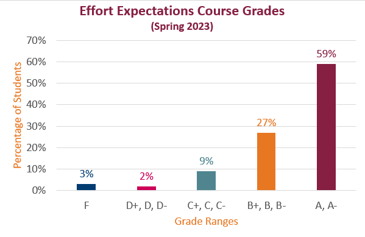

All submitted work has been marked and returned in Canvas. The Grace Period for all work closed on Friday, April 28. No further work can be revised or submitted.
I have completed the Effort Expectations rubric for everyone in the course, based on the Effort Expectations for Each Grade Level.. Check your grade for the Effort Expectations-Based Course Grade Assignment to see your current course grade.
You have two options:
I have set up the Grades page to show your course grade as the letter grade in the rubric. If you choose to take the final, that grade may change, depending upon your proposal.
The Final Exam opens at midnight on Friday, May 5. That’s the moment that Thursday turns into Friday. For more details on the Final, check the Week 15 Instructions: Writing Your Optional Final Exam.
The rubric for the Current Course Grade Estimate is based on the Effort Expectations chart. The rubric percentages come from the bottom of the Canvas Grades page (see an example on the Checking Your Progress page). I marked the percentage on your rubric according to the number listed. For instance, if you had 85.71% for Weekly Activities, I marked the B rating for that category in the rubric. I added the ratings according to the percentage cut-offs. There is no rounding or bumping up.
I do have several strict guidelines, listed below and in the Short Guide under the Additional Grade Calculation Guidelines heading:
Use this documentation from Canvas for help finding the rubric:
Here is a bar graph showing the current distribution of the grade estimates.

Chart Title: Effort Expectations Course Grades, as of May 3